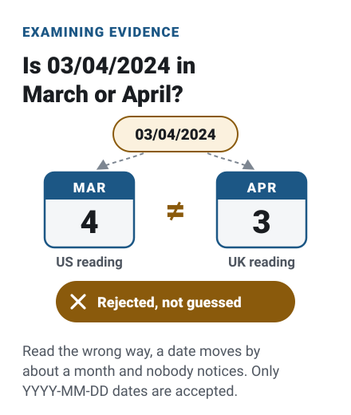
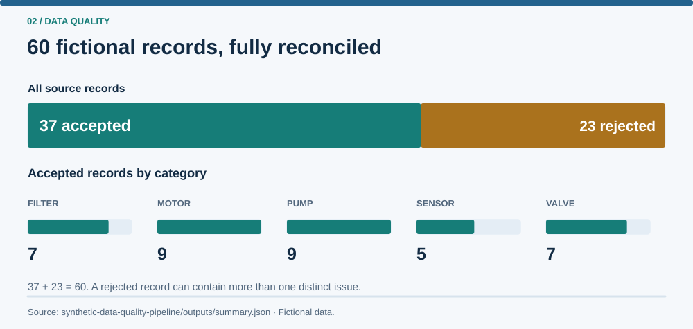

The situation
Before inventory moves into a new system, someone has to decide what every messy record means. Guess wrong and a pump gets quoted as a sensor, or a quantity nobody entered quietly becomes zero.
This project rebuilds that problem with 60 fictional equipment records and one rule: when the data can’t decide, a person does.
Where this comes from
In my professional role, I led an accuracy-first migration of approximately 2,500 inventory records into an in-house quoting module. I coordinated five review rounds with sales and product teams to resolve ambiguous equipment rules and legacy free-text entries before launch.
Three decisions that shape it
-
Flag, don’t fix.
A category like “pressure unit” could mean a pump or a sensor. Instead of picking one, the row goes to a person with the reason attached. It’s slower, but an ambiguous category is never resolved silently.
Exact alias matching; no fuzzy matching.

-
Accept one date format.
03/04/2024 is March 4 to one reader and April 3 to another, and an impossible date like February 30th looks normal at a glance. Only real calendar dates written as YYYY-MM-DD get through.
Strict
YYYY-MM-DDwith ASCII digits; impossible dates rejected.
-
Reject every copy of a duplicated ID.
When two rows claim the same ID, nothing in the data says which one is real, so neither is kept. Rejecting only the second copy would quietly trust whichever happened to come first.
IDs compared after trimming; case-sensitive.

The result
All 60 rows are accounted for: 37 clean records and 23 held for review, each with its reason. Run it twice and you get the same files.
All 60 rows reconciled; duplicate IDs are the most common review reason

outputs/summary.json, not employer data.What I’d do next
A simple review screen: each held row with its reason and the closest likely match shown, with the final call left to the reviewer.
Technical notes
- Input and mapping files are checked for structural problems before anything is written; a malformed file stops the run with exit code 2, while bad rows become reviewable exceptions.
- Every input row gets exactly one outcome, and
summary.jsonreconciles input = accepted + rejected. - A blank quantity is missing, while an explicit
0is a valid count; neither is defaulted. - Exceptions keep the source row number, the raw values and every error code, so a reviewer sees exactly what arrived.
- Outputs carry no timestamps, so a rerun is byte-for-byte identical.
- Standard-library Python at runtime; 21 pytest tests, including a small fixture whose expected output was worked out by hand.
My role
I co-developed the original agent prompt kit for this project with AI assistance, and I provided the business context, project purpose and initial architecture outline. I set requirements, evaluation criteria, edge-case priorities and approval decisions.
I used a planner-and-builder AI workflow to produce the implementation and supporting documentation. AI tools performed the implementation work, while I remained responsible for the project's direction and final approvals.
During the first review round, I personally followed the project's run-and-check instructions in PowerShell and confirmed that the outputs matched the agents' reports. Later corrections and their regression results were verified by agents.
What I learned
I learned to distinguish missing information from an explicit zero and to preserve that distinction throughout validation. I also became more deliberate about using deterministic transformations only when the available facts support a clear decision. Ambiguous mappings belong in a traceable review process rather than being resolved through an undocumented guess.
Academic connections
These are conceptual connections to the reasoning described in Applied Thinking. They do not claim formal implementation of every theory.